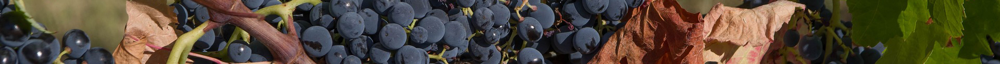

Estamos situados al norte de la Región de Murcia, a una altitud media de 600 msnm. Nuestra peculiares condiciones climáticas, con veranos muy largos, secos y calurosos, nuestros inviernos muy frios, y una pluviometría escasa, irregular y muchas veces torrencial, unida a la altidud, se consideran condicionantes idóneos para la plantación de vides de la variedad Monastrell, muy rústicas y bien aclimatadas al terreno a lo largo de los siglos.
Calidad sobre cantidad
Nuestras parcelas se localizan sobre terrenos calizos. Algunas de ellas, como nuestras viñas de Magán y El Pedregal, crecen sobre terrenos pedregosos y de poca profundidad , ofreciendo bajas producciones y una excelente calidad de uva. Otras se sitúan en terrenos limosos-arcillosos, sobre un lecho aluvial, punto final de un pequeño complejo endorréico, con produciones de uva mucho mas generosas.

Proceso de vendimia
Mas de la mitad de nuestra parcelas corresponden a cepas con formación en vaso, con alternancia de secano y regadío, y vendimia manual. En dicha vendimia se selecciona cuidadosamente el fruto idóneo y se desecha el que no reune la calidad adecuada ni el grado maduración óptimo.
El resto de parcelas han sido adaptadas progresivamente para facilitar la mecanización. En este otro proceso de vendimia, previo al paso de la vendimiadora, se realiza un proceso manual de cribado en la propia parcela, en el que se descartan los frutos que no queremos que sean cosechados y que entren en el proceso de producción.
¿Sabías qué...?
Pese a que los primeros racimos comienzan a formarse a mediados de primavera, con la aparición de las primeras flores y los primeros frutos, estos empiezan a colorearse a mediados de verano, (generalmente se dice que por San Joaquín y Santa Ana), y es a principio de otoño ( de septiembre a Noviembre) cuando se realiza la tradicional vendimia, cuyas fechas pueden adelantarse o atrasarse algunas semanas en función de las condiciones climáticas que hayan existido ese año